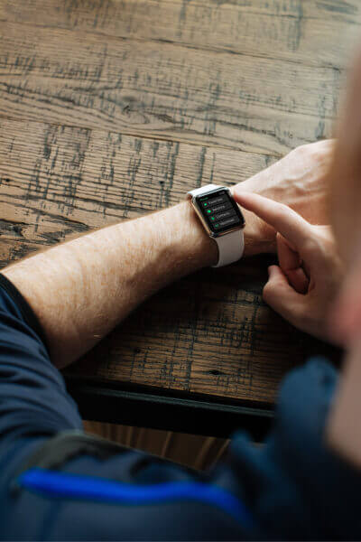

Know your runs. In and out.
Train smarter with more in-run stats. Want to compare a run to your last five? Just swipe left. Mark splits by selecting pause or using gestures, like tapping the screen or double-clicking the side button. And get a full post-run report, including elevation.
Run in good spirits..
A little support can go a long way. You can receive encouraging emoji from friends. And reminders triggered by your friends' shared activity, the current weather, or your own history give you every reason to run.
Just do it. Sunday.
Run every Sunday and see how long you can keep your streak alive. Fuel your run with exclusive Nike+ Run Club playlists on Apple Music.
Nike Sport Band. Light. Flexible. Breathable.
Made from the same durable, lightweight fluoroelastomer as the original Apple Watch Sport Band, the Nike Sport Band reduces weight and improves ventilation via row after row of compression-molded perforations.

Take control of your health.
With built-in GPS and altimeter, Apple Watch Nike+ has all the features to help you take your run to the next level. You can even pair your watch wirelessly with compatible gym equipment. And it's swimproof, so you can take a post-run dip in the pool.